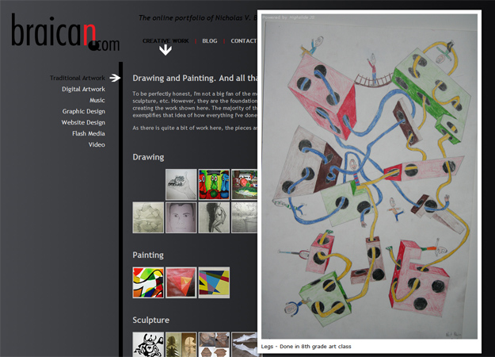
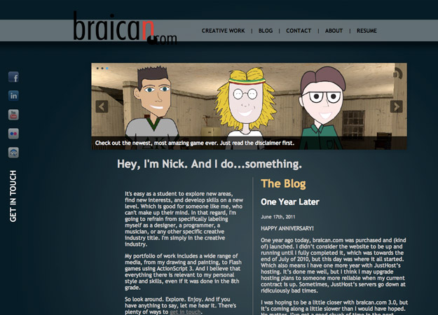
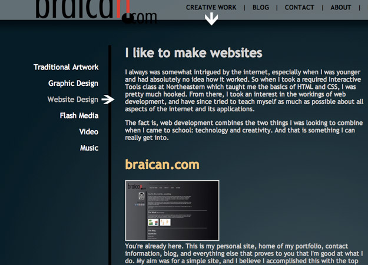
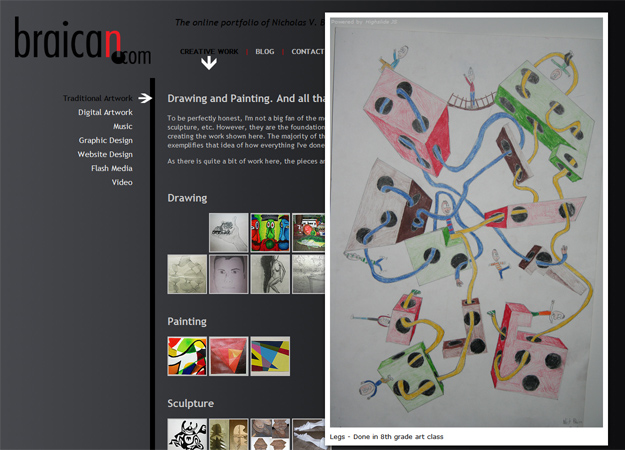
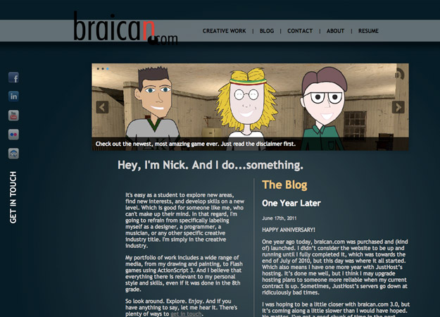
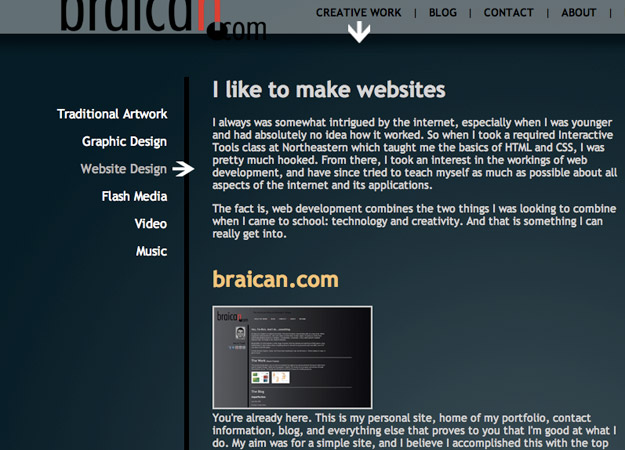

Case Studies
 
 

 
HTML + CSS + jQuery + a little bit of WordPress Development
This is the third major release of braican.com, which, if you haven't already figured out, is the homepage and online gallery of all things Nicholas Braica. I've found it particularly interesting to go back and look at my previous designs and code, simply for the satisfaction of seeing how far I've come and how much I've learned.
My Task
To create an interesting, interactive, and informative website about myself and my work. Being fascinated with all kinds of workings on the web, I wanted to make sure to use as many cool technologies that I could incorporate. HTML and CSS (some CSS3, even) form the basics of the site, WordPress and its PHP allowed me to get involved in a heavier coding atmosphere and really manipulate my writing, and jQuery and JavaScript helped to tie everything together and make it all look so sweet.
I really tried to simplify everything about the site in this current release. I stripped a few sections away from the previous versions, and I cut down on my portfolio items, really showcasing only those things that I find to be quality, or at least a terrific example of how I work.
The screenshots to the right display the timeline of my designs, starting with the earliest iteration on top.
You're already here, but just in case you want to go back to the homepage, here's your link.
Home | About | Portfolio
braican.com © Nicholas V. Braica | 2011